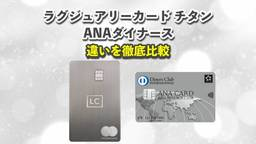

マイルの錬金術師アドバンス
https://haruwari.com
陸マイラーをはじめて累計で1,700万マイル以上のポイントを貯めてきました。ブログでは旅行の体験を中心に発信しています。マイルの貯め方・使い方は体系的にお伝えできるように無料のメール講座を用意しています。初心者から中級者くらいまでの方にお役に立てる内容にしていますので合わせてご確認いただけると幸いです。
フィード

ラグジュアリーカード チタンとANAダイナースを比較！年会費・マイル・特典の違い
マイルの錬金術師アドバンス
「本記事はプロモーションを含みます」 ラグジュアリーカード チタンとANAダイナースを比較する際は、年会費に加えて、ANAマイルの貯まり方と実際に利用する特典を確認すると違いが分かります。 通常ショッピングをANAマイル […]
10時間前
ANAアメックスゴールドのマイル移行方法！手数料・上限・日数と入会特典の使い方（10月）
マイルの錬金術師アドバンス
「本記事はプロモーションを含みます」※2026年10月8日時点の公式情報を確認して作成しています。 ANAアメックスゴールドで貯めたポイントは、自動ではなく会員自身が手続きし、1,000ポイント＝1,000ANAマイルで […]
2日前
エバー航空ビジネスクラス搭乗記【台北→セブ】食事・座席・アメニティをレビュー（BR281便）
マイルの錬金術師アドバンス
日本からセブに行く場合、直行便は成田か関空を利用しますが、意外と経由便で行くという方もいるようです。 経由をする場合は、韓国経由か台湾経由が多いかと思われますが、今回は台湾を経由してエバー航空のビジネスクラスでセブに行く […]
3日前
ラグジュアリーカード チタンとセゾンプラチナ・ビジネス・アメックスを比較して違いを詳しく解説
マイルの錬金術師アドバンス
「本記事はプロモーションを含みます」 ラグジュアリーカード チタンとセゾンプラチナ・ビジネス・アメックスは、どちらも空港ラウンジやコンシェルジュを使えるカードですが、年会費と追加会員の旅行サービスに大きな違いがあります。 […]
3日前
アメックスゴールドプリファードとラグジュアリーカードチタンどっちがよいか違いを比較！年会費改定後の選び方
マイルの錬金術師アドバンス
「本記事はプロモーションを含みます」 無料宿泊・家族カードの費用・対象店のポイント優遇を重視するなら、アメックスゴールドプリファードが候補です。 ラウンジの利用頻度・専用コンシェルジュ・ポイントの使いやすさを重視するなら […]
4日前
FLY ON プログラムとは？JALのステイタスサービス特典、JGC取得方法、JGCプレミア→JMBプレミアへの変更解説
マイルの錬金術師アドバンス
JALの上級会員になると、空港ラウンジや専用チェックインカウンター、優先搭乗など、旅行や出張を快適にするサービスを利用できます。 ただし、毎年の搭乗実績で決まる「FLY ON プログラム」と、生涯実績を積み重ねる「JAL […]
5日前

ANAプレミアムメンバーとは？サービス、特典の魅力！スーパーフライヤーズカードの制度変更まで解説
マイルの錬金術師アドバンス
ANAの上級会員になると、空港ラウンジや優先チェックイン、優先搭乗など、旅行や出張を快適にするサービスを利用できます。 ただし、毎年の実績で決まる「プレミアムメンバー」と、対象カードの保有を前提とする「スーパーフライヤー […]
8日前
【9/29最新】ANA SFC改悪の見直しを発表！ラウンジ利用条件・300万円決済・再入会など変更点を解説
マイルの錬金術師アドバンス
ANAは2026年9月、SFCの制度改定を見直し、4月案で利用不可としていたSFC LITEのANAラウンジを条件付きで利用できると案内しました。 国内線は混雑時を除き、国際線はANAグループ運航便利用時の羽田・成田・ホ […]
11日前
マリオットアメックスのマイル移行を解説！ANA・JALへの交換方法と注意点
マイルの錬金術師アドバンス
マリオットアメックスで貯めたポイントは、Marriott Bonvoyの公式サイトからANA・JALマイルへ移行できます。 ANA・JALなら、60,000ポイントをまとめて移すと25,000マイルになります。 この記事 […]
14日前
【10月】HafHの招待コードキャンペーン！初月30％OFFで登録する方法
マイルの錬金術師アドバンス
【本記事はプロモーションを含みます。】 HafH（ハフ）では、2026年10月8日から、新規月額会員登録の初月料金が30％OFFになる特典を提供しています。 さらに、招待コードを適用して300コイン以上の積立で登録すると […]
16日前